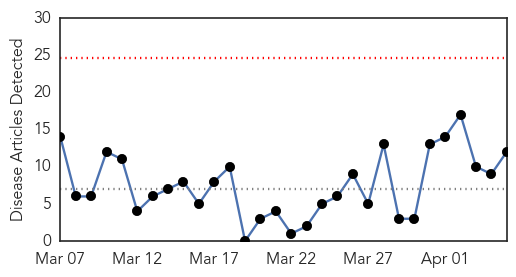

Measles
30-Day Web Trend
0 alerts, 0 warnings

30-Day Twitter Trend
0 alerts, 0 warnings

Article Locations

Article Confidences

Top Articles:
- 0.966
- More measles cases in province
- 0.952
- Measles makes a comeback, but not if you're vaccinated
- 0.942
- Baystate Medical Center in Springfield alerting 300 patients potentially exposed to measles
- 0.894
- Immunization no more: Inside the mindset of parents who spurn vaccination
- 0.859
- UC Berkeley providing vaccinations after second student diagnosed with measles
- 0.841
- UC Berkeley student in isolation in second measles case
- 0.820
- Second measles case confirmed at UC Berkeley
- 0.795
- Ont. infant tests positive for measles; exposure warnings issued in Brampton
- 0.747
- Cal Student Found With Measles Attended Class Last Week « CBS San Francisco
- 0.741
- Measles Warning After 2nd UC Berkeley Student Gets Infected
- 0.659
- Using viruses to fight cancer
- 0.542
- Paediatrics hospital faces overcrowding
Top Tweets:
-
No tweets found for Apr 05, 2014
Chikungunya
30-Day Web Trend
1 alerts, 0 warnings

30-Day Twitter Trend
0 alerts, 0 warnings

Article Locations

Article Confidences
Top Articles:
- 0.999
- Action urged against insect-borne threats in the Americas
- 0.999
- Dominican Republic Reports 1st Outbreak of Chikungunya
- 0.998
- Tests confirm presence of chikungunya virus in D.R.
- 0.993
- Chikungunya: Mosquito-borne virus arrives in Dominican Republic
- 0.992
- St Lucia bracing for more cases of chikungunya disease
- 0.990
- St Lucia braces for increase in cases of chikungunya disease
- 0.972
- FAZLUR RAHMAN: We must be vigilant against viral pandemics
- 0.883
- Health authorities concerned about chikungunya outbreak
Top Tweets:
-
No tweets found for Apr 05, 2014